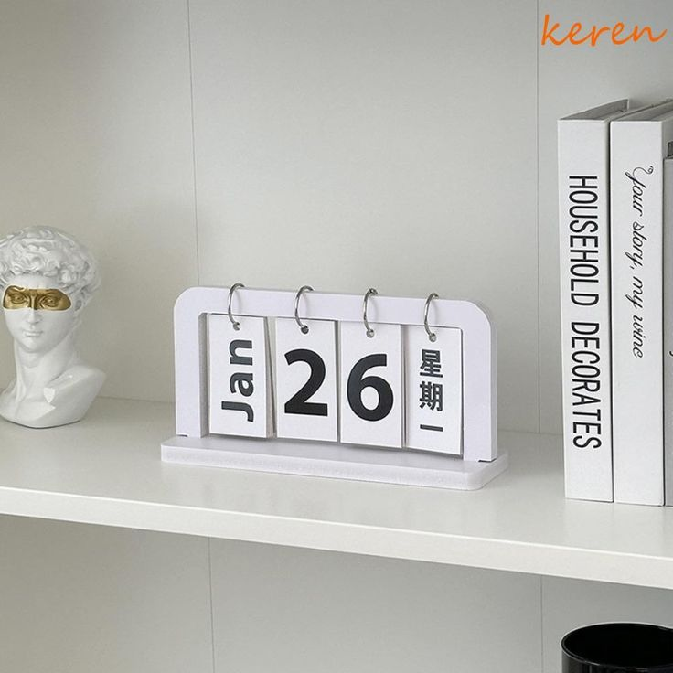

Настольный календарь
$ 4.99
В корзинуЭтот лаконичный перекидной календарь в скандинавском стиле станет стильным и практичным акцентом на вашем рабочем столе или книжной полке. Чистый белый цвет и минималистичный дизайн позволяют ему легко вписаться в любой современный интерьер.
Характеристики
- Цвет: белый (черный шрифт)
- Материал: дерево (МДФ), металлические кольца, плотный картон
- Высота: 12 см
- Ширина: 20 см
- Тип: вечный (перекидной)
- Глубина: 5 см